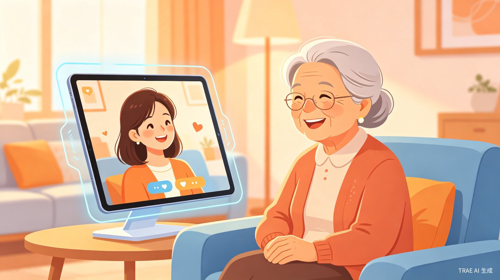
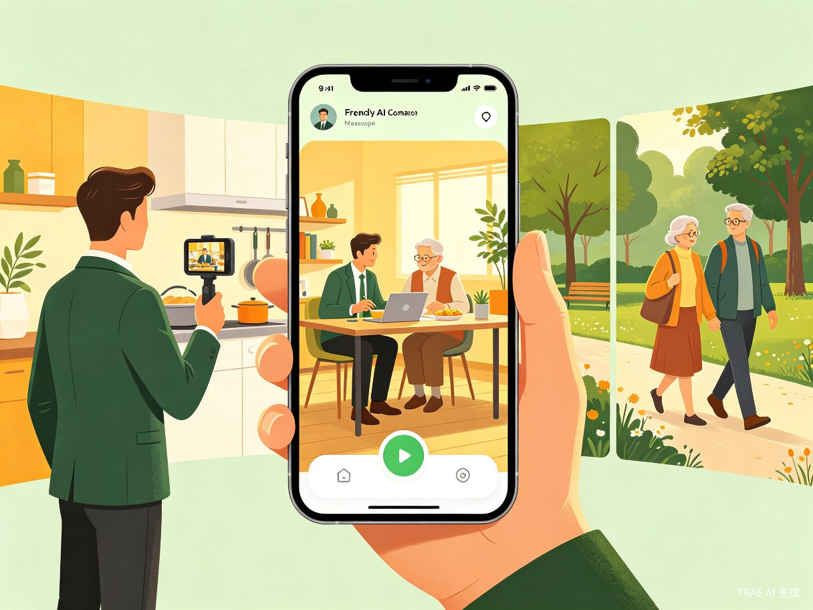

30-50岁中青年子女
因工作或生活原因无法常伴父母左右，内心牵挂却分身乏术。每天只需花一两分钟录制生活片段，就能让父母持续感受到子女的陪伴和关心。
你的数字亲人，陪在父母身边
面向空巢老人的AI亲人陪伴数智人
用AI的温度，跨越距离，把子女的陪伴送到父母身边
"有一天，我给快80岁的母亲简单介绍了豆包的用法，告诉她有什么问题都可以问。慢慢地，母亲喜欢上了和豆包聊天，还常跟我说豆包挺有意思的。每次看着母亲和豆包对话的样子——又亲切又有礼貌，就像和老师说话一样——我突然意识到：如果给这样的AI数智人再加入子女自己的性格、情绪和记忆，她就能成为子女的"数字分身"，长期陪伴在父母身边，越用越亲。"
城市化进程中的家庭陪伴困境
大量年轻人离开家乡在大城市工作，对父母的关怀有心无力，内心充满愧疚。视频通话需要双方同时在线，频率有限，无法满足日常陪伴。
空巢老人长期缺少亲人陪伴，生活孤单、精神空虚，渴望子女的情感抚慰却不愿开口打扰，报喜不报忧。
智能音箱或通用聊天机器人缺乏亲人的温度和个性化记忆，老人很难产生情感依赖和信任，无法替代真正的亲情陪伴。
一款专为老年人设计的移动端AI陪伴App

三大核心能力，让陪伴变得简单而有温度
子女只需花几分钟录制自己的语音和面容，即可生成一个拥有自己外貌、声音、说话风格的数字分身。这个"数字亲人"可以像真人视频通话一样，随时与父母面对面聊天。
子女通勤途中录制一段生活片段，数智人就能像讲故事一样生动地描述给老人听，还能展示照片和视频。老人遇到日常问题时，数智人可以像子女在身边一样耐心指导。
每次交流结束后，系统自动生成一份简短的交流摘要，帮助忙碌的子女快速了解父母最近的身体状况、情绪变化和真实需求，让远方的关怀不再缺席。
数智人具备长短期记忆能力，会随着交流越来越了解老人的习惯和喜好，说话方式也越来越贴近子女本人的风格，真正做到"越用越亲"。
连接两端的用户， bridging the distance

因工作或生活原因无法常伴父母左右，内心牵挂却分身乏术。每天只需花一两分钟录制生活片段，就能让父母持续感受到子女的陪伴和关心。
子女长期不在身边，日常生活缺少陪伴和交流。可以随时打开App和"数字子女"聊天，获得情感抚慰和日常帮助，不再感到孤单。
如果没有"亲伴"，用户现在会遇到什么不方便
老人每天面对的是空荡荡的房间和漫长的等待，没有人可以倾诉，没有人分享生活的点滴。
子女偶尔打来的电话，老人往往只报好消息，真实的不适和需求被隐藏，子女根本无法了解父母的真实状态。
子女想关心父母却不知道从何入手，想陪伴却没有整块时间，愧疚感日积月累却无从释放。
从社会价值和效率提升两个维度，说明这个创意的价值
中国现有超过1.3亿空巢老人，老龄化趋势持续加剧。"亲伴"用AI技术弥合了家庭陪伴的鸿沟，让每一位老人都能享受到来自子女的温暖陪伴，有效缓解老年人的孤独感和精神空虚，提升晚年生活质量。同时减轻子女的心理负担，让"尽孝"不再受时间和距离的限制。
子女无需每天挤出整块时间打电话，只需一两分钟录制生活片段，数智人就能持续为老人提供高质量的陪伴和交流。系统自动生成的交流摘要，让子女在碎片时间里就能掌握父母的真实状况和需求，大幅降低了关怀的沟通成本，提升了家庭情感连接的效率。
亲伴——不是冷冰冰的机器人，而是带着子女温度的"数字亲人"。用AI的力量，让每一位空巢老人都能感受到家的温暖。